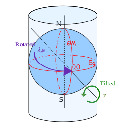
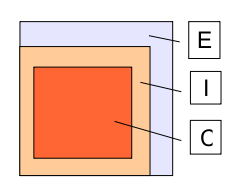

Model Domain
Introduction
There are four projections available in HARMONIE, polar stereographic, lambert, mercator and rotated mercator. The model itself chooses the best (least distortion) projection among the first three given your domain specifications. The rotated mercator projection is selected through the variable LROTMER. Note that the polar stereographic project is defined at $90^o$ N(S) whereas in GRIB1 it is defined at $60^o$ N(S).

Polar stereographic, Lambert and Mercator projection.

Rotated mercator projection
Model domain settings
For each domain we set variables related to the geometry and the resolution like:
HARMONIE model domains are defined in settings in scr/Harmonie_domains.pm. The following variables related to the geometry and the resolution are required:
TSTEPis model timestep in secondsNLONis number of points in $x$-direction.NLATis number of points in $y$-direction.LONCis the longitude of domain centre in degrees.LATCis the latitude of domain center in degrees.LON0is the reference longitude of the projection in degrees.LAT0is the reference latitude of the projection in degrees. IfLAT0is set to 90, the projection is polar stereographic. IfLAT0 < 90, the projection is lambert unlessLMRT=.TRUE.GSIZEis the distance between each grid point in meters in both $x$- and $y$-direction.EZONEis number of points over extension zone in both $x$- and $y$-direction. Default value 11.LMRTswitch for rotated Mercator projection. IfLMRT=.TRUE.LAT0should be zero.
NLON and NLAT should satisfy the equation $5^b * 3^d * 2^e$, where $a$-$e$ are integers $\geq 0$.
The default area is the Denmark domain (DKCOEXP). The following values for C+I zone and truncation are calculated in src/Harmonie_domains.pm from the values above.
NDLUXGis number of points in x-direction without extension (E) zone.NDGUXGis number of points in y-direction without extension (E) zone.NMSMAX_LINEis truncation order in longitude. By default (NLON-2)/2.NSMAX_LINEis truncation order in latitude. By default (NLAT-2)/2.NMSMAX_QUADis truncation order in longitude. By default (NLON-2)/3. It is used to create filtered orography with lower resolution.NSMAX_QUADis truncation order in latitude. By default (NLAT-2)/3. It is used to create filtered orography with lower resolution.

Domain creation tool
To help with the design of a new domain, there is an interactive tool that lets you experiment with the grid parameters described above, and visualize the resulting domain immediately on a map, see figure below.

At present, it only works for Lambert and polar stereographic projection, not rotated mercator.
Creating a new domain
If you are happy with your new domain created with the help of the domain creation tool you can add it to scr/Harmonie_domains.pm for your experiment, my_exp (assuming you have set up the experiment):
cd $HOME/hm_home/my_exp
PATH_TO_HARMONIE/config-sh/Harmonie co scr/Harmonie_domains.pm
#
# add domain information for new domain called MYNEWDOM in this file
#
vi scr/Harmonie_domains.pm
#
# set DOMAIN=MYNEWDOM in the experiment config file
#
vi ecf/config_exp.h You can now start a new experiment with a newly defined domain called MYNEWDOM.
Create a test domain with gl
Before you go through the full climate generation process you can generate a test domain using gl. Define your domain in the namelist like:
&NAMINTERP
OUTGEO%NLON = 300 ,
OUTGEO%NLAT = 300,
OUTGEO%PROJECTION = 3,
OUTGEO%WEST = 17.0,
OUTGEO%SOUTH = 58.0,
OUTGEO%DLON = 2500.0
OUTGEO%DLAT = 2500.0
OUTGEO%PROJLAT = 60.0
OUTGEO%PROJLAT2 = 60.0
OUTGEO%PROJLON = 0.0,
/Running gl using this namelist by
gl -n namelist_filewill create an GRIB file with a constant orography which you can use for plotting.